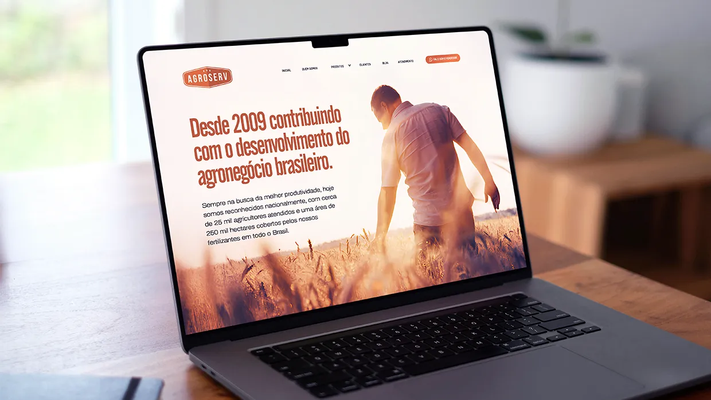
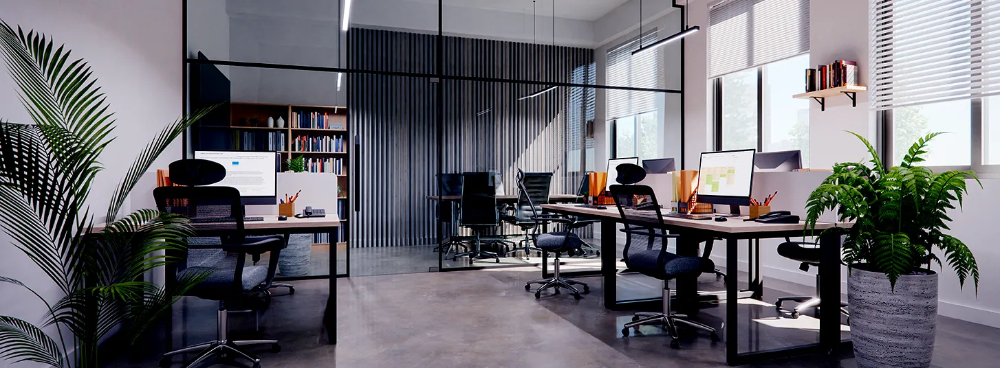

Responsabilidade técnica em cada laudo e projeto entregue..
Laudos periciais e projetos agrícolas com respaldo legal.
Cobertura em todo o Brasil, com atendimento agendado.
Laudos técnicos e periciais com embasamento legal, elaborados para dar segurança em processos judiciais, extrajudiciais e administrativos. Documentos precisos, dentro das normas vigentes, para embasar decisões e resolver conflitos com respaldo técnico.
Projetos agrícolas e estudos de capacidade de pagamento desenvolvidos para viabilizar crédito rural, financiamentos e investimentos — com foco em aumentar a aprovação e a sustentabilidade econômica da sua propriedade.
Consultoria em Engenharia Agronômica e Ambiental para gestão de propriedades, regularização ambiental e planejamento agrícola, com foco em produtividade, conformidade e resultados duradouros.
Assessoria técnica em cada etapa da negociação de imóveis rurais, com análises técnicas e documentais que garantem segurança e transparência antes de você assinar.
Avaliação de imóveis rurais com metodologia reconhecida, determinando o valor de mercado com precisão — indicada para financiamentos, inventários, processos judiciais e garantias bancárias.


Na Ageu Projetos e Perícias Agronômicas e Ambientais, entregamos soluções técnicas com responsabilidade, precisão e credibilidade para produtores rurais, empresas, investidores e proprietários de imóveis rurais.
Atuamos em Engenharia Agronômica, Engenharia Ambiental e Consultoria Imobiliária Rural — de laudos periciais a avaliações de propriedades — sempre com foco na segurança e no sucesso de cada cliente.
Cada projeto segue critérios técnicos e as normas vigentes, garantindo resultados confiáveis para financiamentos, processos judiciais, negociações imobiliárias e decisões estratégicas.
Atendimento personalizado em todo o território nacional, mediante agendamento, unindo conhecimento técnico, experiência de mercado e responsabilidade profissional.
Prestamos atendimento em todo o Brasil, oferecendo suporte técnico especializado para propriedades rurais, empresas, instituições financeiras e investidores, sempre com compromisso, agilidade e excelência.
Todos os serviços são desenvolvidos com rigor técnico e respaldo profissional, garantindo segurança, confiabilidade e conformidade com a legislação e as normas aplicáveis.
Cada propriedade e cada cliente possuem necessidades específicas. Por isso, desenvolvemos soluções sob medida, buscando sempre os melhores resultados para cada projeto, perícia ou consultoria.